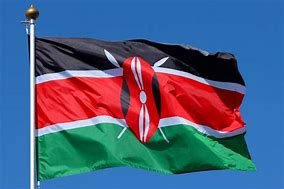

Danson Kisilu
About Me
Hello! My name is Danson Kisilu. I am passionate about software engineering and radiography, and I enjoy learning web development to build creative projects.
Web Dev Resources
Location Highlights
Kenya is located in East Africa and is known for its diverse landscapes including savannahs, mountains, and the Great Rift Valley. Mount Kenya, at 5,199 meters, is the second-highest peak in Africa.